Motoyama, Kochi: things to do, food and stays
Motoyama · Kochi
Motoyama
Highlighted on the Kochi map.

Stay
清流ハウス
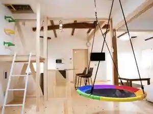
Seiryu House
一軒宿あせみ
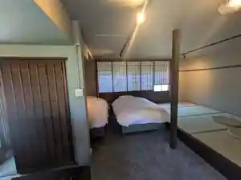
Ikkenyado Asemi
Inn in Yoshino, Motoyama with riverside setting.
Dining
SORA
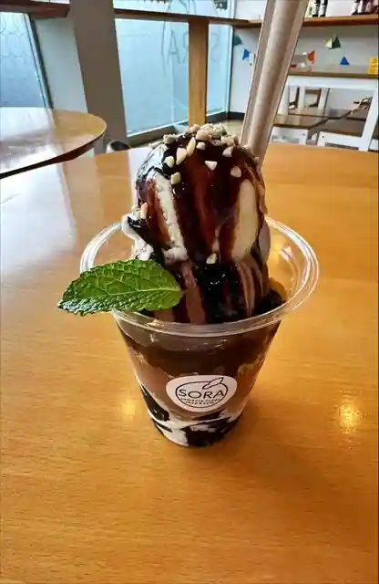
SORA
Kitchen クルネ
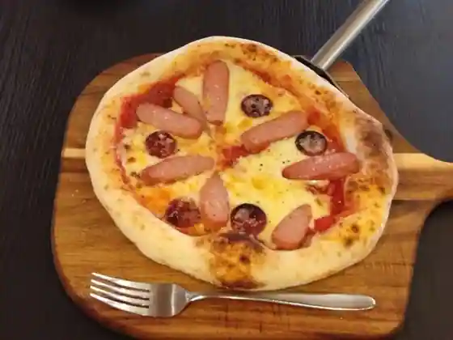
Kitchen Kurune
レストラン ハーベステラス
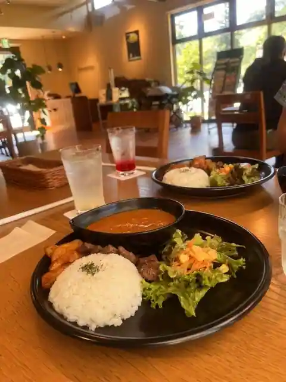
Restaurant Habesu Terrace
ヨキコーヒー
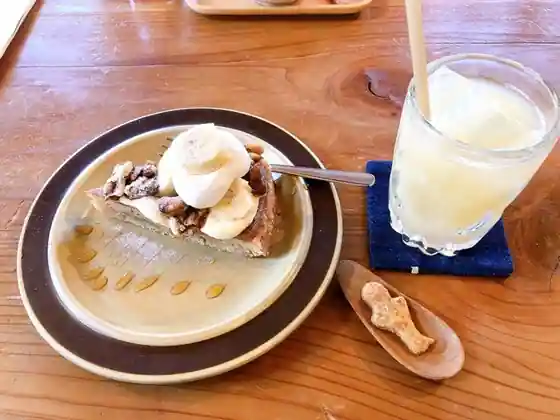
Yoki Coffee
Cafeレスト しゃくなげ
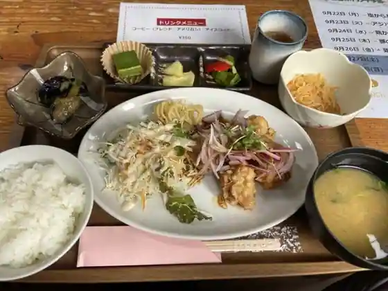
Cafe Resuto Shakunage
まるごと・あかうし!
Marugoto Akaushi!
トモエ
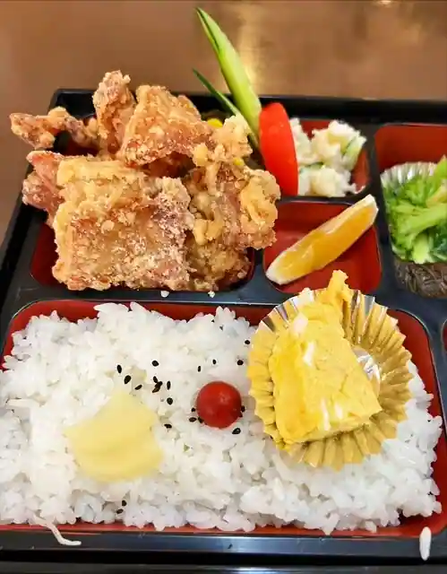
Tomoe
味楽
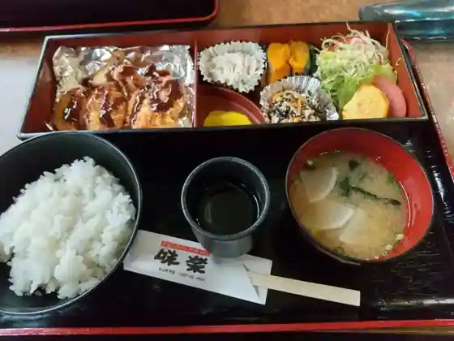
Aji Raku
カフェ ミシシッピ
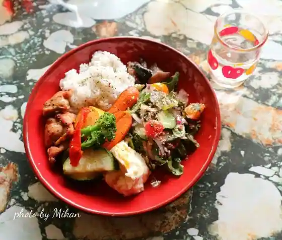
Cafe Mishishippi
いち松
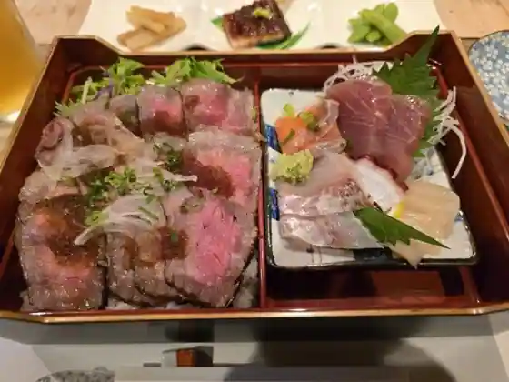
Ichi Matsu
居酒屋にっさん
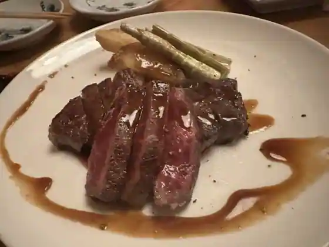
Izakaya Nissan
汗見川食堂カドヤ
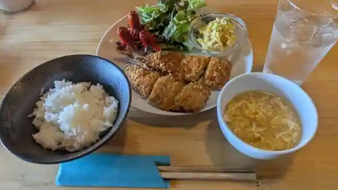
Ase Migawa Shokudo Kadoya
おむすび処 こめのみみ
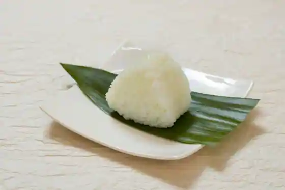
Omusubi Tokoro Komenomimi
一休
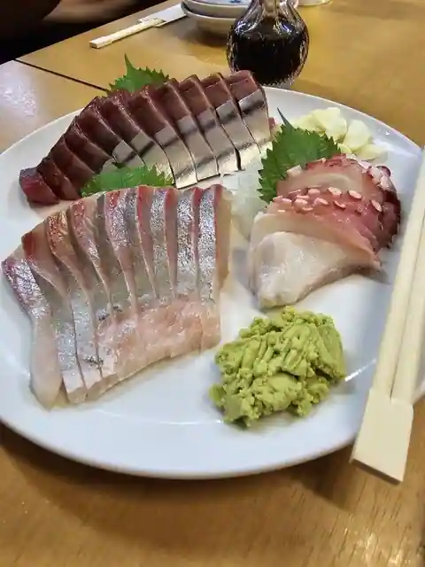
Ikkyu
Sights
Kyu Motoyama Bridge
Motoyama Town Hall

Aka Taki

Shiraga Yama

Tosa Akaushi no Hoboku

Yamazaki Dam
Motoyama Chobo